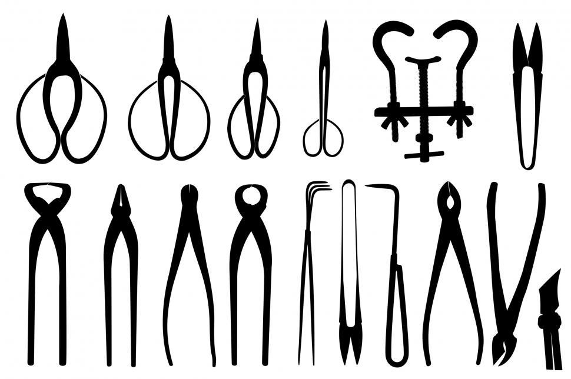

Bonsai Tools
To be able to model, style or just maintain the bonsai, it is necessary to have the appropriate tools at our disposal.
To do a good job we must use the appropriate bonsai tools:
-
Fine pruning shears, to access inside the bonsai canopy or
-
Thick scissors for cutting larger branches or cutting roots in the potting phase.
-
Concave cutting pliers to remove buds close to the trunk to prevent them from growing further.
-
Straight concave pliers to disguise the cut in the branches.
-
Scissors-Tweezers or defoliator to remove the leaves of bonsai.
Any bonsai tool must always be clean so as not to transmit or spread diseases. Using a thin oil to lubricate helps maintain and prolong tool life.

Fine pruning shears
It is the scissors that, because of its elongated shape, allow you to cut the shoots that are hidden inside the branches, facilitating access inside the bonsai canopy without damaging the branches.
Thick scissors
It is the scissors that adapts best to the hand and makes it ideal for pruning thicker branches as well as roots, with a clean and easy cut.
Concave cutting pliers
Pliers that provide a concave and clean cut that accelerates the bonsai healing process
Straight concave pliers
Angled tip pruner developed for the removal of thick branches and also used to remove branches located between the bifurcations in the bonsai. Allows you to disguise the cut.
Scissors-Tweezers or defoliator
It is a tweezers used in the defoliation of bonsai, easier to handle than scissors when we practice defoliation of bonsai.
Rake tweezers
This tool is widely used in bonsai repotting work to untangle the roots with its triple hook. Tweezers are used to remove needles from pine trees and remove unwanted buds from bonsai branches.
Jin pliers
Tool used to strip bark from branches for Jin training. It is also used for wiring bonsai.
Cut paste
In a tube or in a jar, there is healing paste for hardwoods and conifers. It is always advisable to apply the healing paste after any significant cut in the bonsai, it helps healing and prevents the proliferation of fungi or diseases.
Wires
Wiring is of fundamental importance in the aesthetics of bonsai.
It is the operation that allows orienting and directing the branches, a determining process in the stylization that we intend to give our bonsai, giving the harmony and more specifically the desired style. Bonsai wiring consists of winding anodized aluminum or copper (cooked) wire around the trunk or branch to change its direction, in order to define the desired shape.